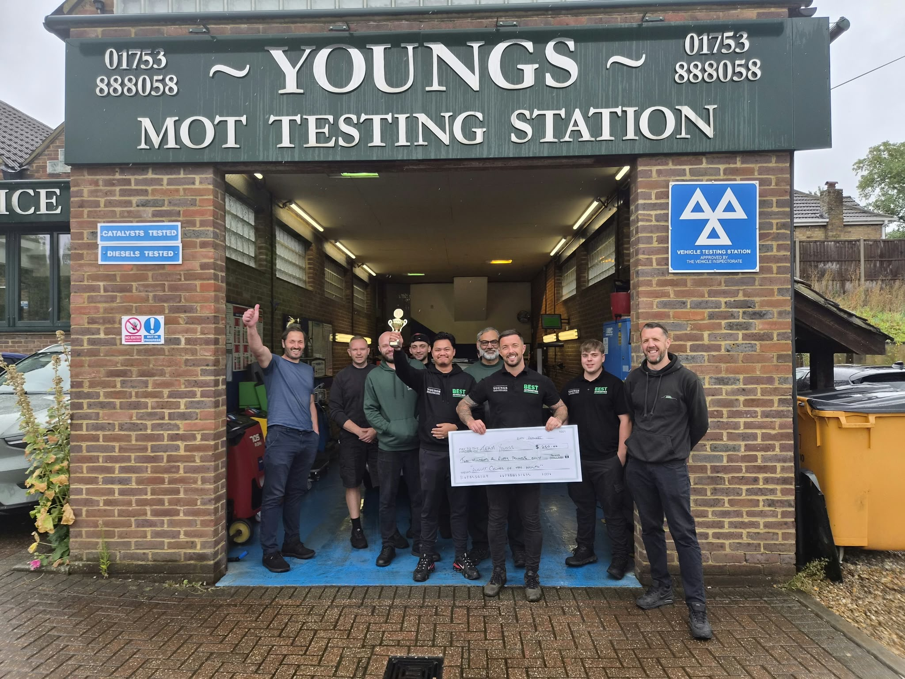
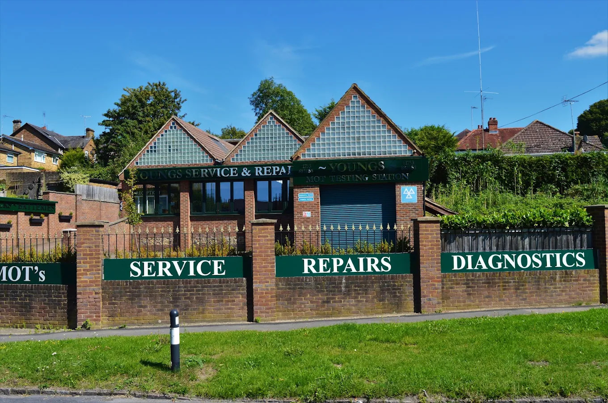
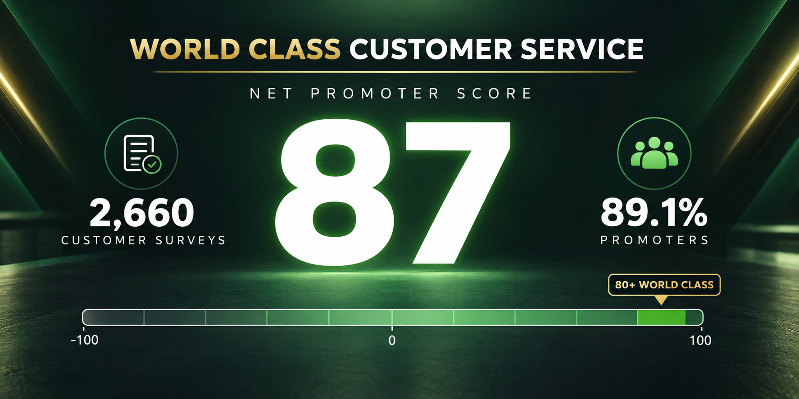

Thank you from Tobyn
Hi everyone,
Congratulations to Youngs
Youngs won this month’s Monthly Performance Trophy after finishing more than 30% ahead of budget, the strongest percentage performance across the group. The team have done an amazing job, made even more impressive by how they have rebuilt and progressed since joining the group in April. It was great to visit the site and see so many happy customers, an incredibly busy yard and a team working brilliantly together. The whole place was absolutely buzzing. Congratulations to everyone at Youngs on a thoroughly deserved achievement.
World-class customer service
Our customers are incredibly important to us. They pay all our wages and make it possible for us to keep building great businesses, so we always want to know how we are doing and listen to their feedback. Every car that leaves one of our workshops is followed by a message asking the customer a simple question: “Would you recommend us to your friends?” This is a well-known measure called Net Promoter Score, or NPS. I am delighted and incredibly proud of you all to share that, across 2,660 customer surveys from 5 May to 16 September, we achieved an average NPS of 87 out of a possible 100. Qualtrics and Medallia both describe a score above 80 as world class, so this really is an amazing achievement. It belongs to every one of us because delivering a great customer experience is never down to just one person. Thank you for the part you play in looking after our customers so well.
Tobyn
Congratulations to the Youngs team


World-class customer service
